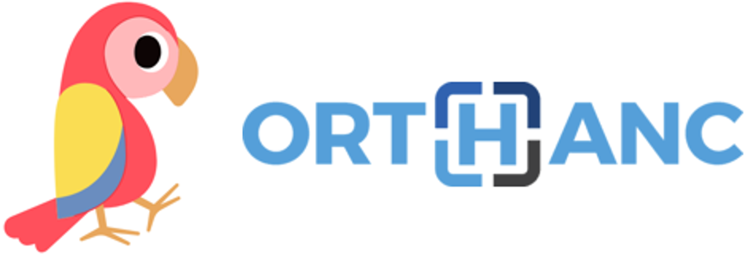

Orthanc in PARROT
PARROT (Platform for Artificial Intelligence Guided Radiation Oncology Therapy) is an open-source, web-based platform aims to improve therapeutic decision-making through advanced AI techniques. Its goals are to facilitate the visualization of AI model outputs, to use contour editing tools to modify AI segmentation models, and to support decision making between XT and PT plans. It is also able to store and visualize step-by-step modifications of AI segmentation, manage patient and associated image data, and export or import those information. PARROT uses Orthanc to store image data and the modification history.
PARROT
Architecture
We use nginx to deliver the web application and to connect the web frontend to two back-end servers: 1) The AI server for segmentation and dose prediction, and the 2) Orthanc server for data storage. The AI server can run different built-in and user-provided AI models. The web application with the user interface consists of six modules: Patient Management, Study Management, AI Model Management, Patient Modeling, Plan Evaluation, and AI Marketplace.
Download Video DocumentationComponents
The web-based user interface consists of six components: Patient Management, Study Management, AI Model Management, Patient Modeling, Plan Evaluation, and AI Marketplace. The front end includes a data browser and manager, a Multi-Planar Reconstruction (MPR) viewer for visualizing image studies and displaying and comparing model results, and an AI manager for configuring and running AI models.
DocumentationEditing image segmentation
The predicted output of the AI model has a bias that can be corrected through the user interface. PARROT stores the step-by-step modification history of the image segmentation on Orthanc. This modification history can be exported or imported together with the modified image data.
DocumentationSegmentation and treatment plan evaluation
The results of the AI prediction can be inspected in the Patient Modeling and Plan Evaluation view. Users can view different modalities of image data (CT, MRI), structure sets (RTSTRUCT), and radiation treatment planning (RTDOSE), the latter two either from uploaded DICOM files or predicted by AI models. PARROT provides tools to compare contours and treatment plans, visualize the differences, and evaluate the results. Users can provide clinical goals.
Documentation